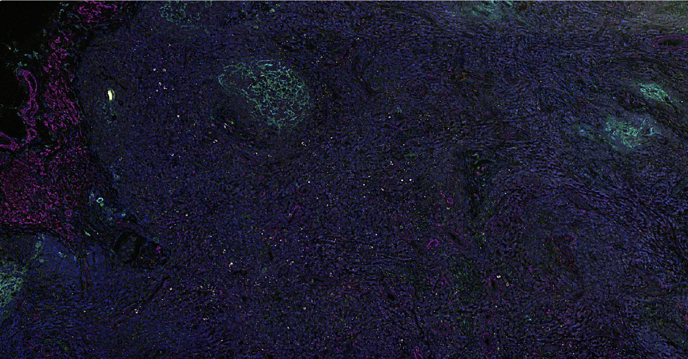
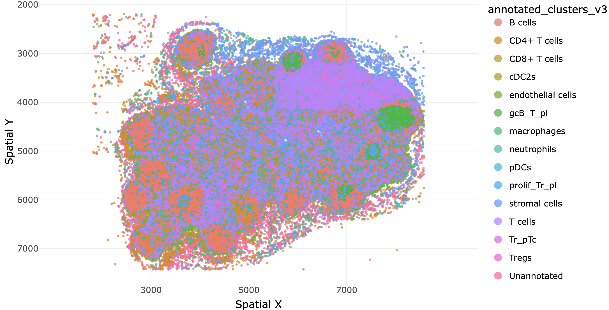
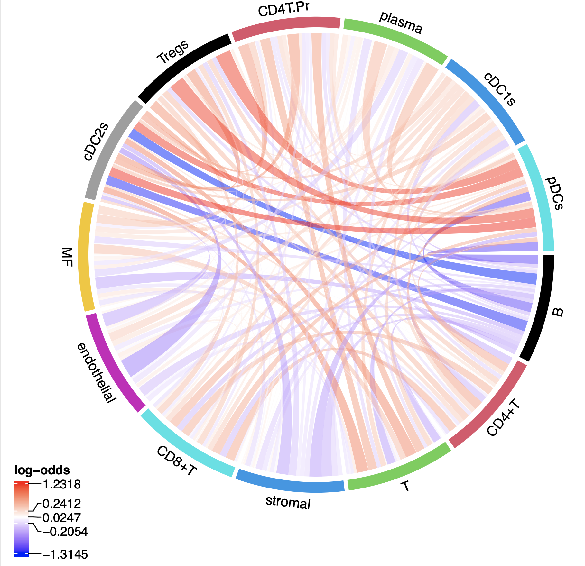

An interactive suite for researchers to upload, analyze, visualize, and explore multiplexed immunofluorescence data — no programming knowledge required. Built on Phenomenalist.
Applications
LLM-driven cluster annotation and interactive gating for rapid cell identification.
Pair correlation functions and pairwise interaction analyses to map cellular neighborhoods.
Merge, harmonize, and compare SPE objects across experimental conditions.
Circos plots, PCF curves, and customizable visualizations ready for figures.



Phenomenalist provides a complete pipeline for CODEX and multiplexed immunofluorescence data — from raw segmentation files through phenotyping, spatial analysis, and publication-ready figures.
Built with R/Shiny and backed by SpatialExperiment objects, every module is designed for researchers who need powerful analysis without writing code. Upload your data, interact with the results, and export what you need.
View on GitHub →